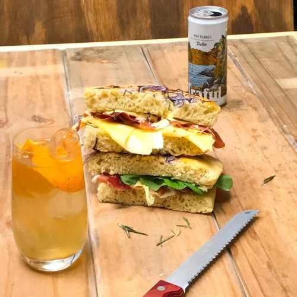

Pizza Focaccia
Ingredientes
Para la masa
- Harina 000/0000 300 g.
- Semolín o sémola 200 g (si queres podes usar solo harina).
- Sal 10 g (1 cda al raz).
- Levadura fresca 10 g (si usas seca son 3/4 g).
- Agua 300 cc aprox.
- Aceite de oliva 50 cc como máximo.
Version 1
- Cebolla morada cortada en juliana.
- Romero.
- Sal y pimienta.
- Agua fría c/n.
- Queso mozzarella c/n.
- Aceitunas negras descarozadas.
- Tomates cherrys.
Version 2
- Mayonesa.
- Jamón crudo.
- Queso en fetas.
Procedimiento
1. Para la masa: en un bowl, poner la harina, el semolín y la sal. Mezclar para unificar. Agregar la levadura, mezclar y agregar el agua en el centro. Unificar todo, amasar y agregar un poco de aceite que le va muy bien 😉. Seguir amasando hasta que te quede lisa y tierna. 2. Con un poco de aceite de oliva en la asadera, poner a leudar la masa tapada. 3. Estirar la masa y agregarle unos chorritos más de aceite por encima. 4. Para la primer versión de sanguche 1️⃣: agregarle la cebolla morada, el romero, condimentar con sal y pimienta. A último momento, la podés rociar con agua para que quede bien crocante! 👌. Cocinar en un horno a 190ºC (entre moderado y fuerte) 🔥 por media hora aprox. 5. Cuando esté lista, cortar por el medio para poder rellenar con queso mozzarella 🧀, las aceitunas y los tomates cherrys. Tapar con la otra masa y llevar al horno hasta que se derrita el queso 🔥. 6. Para la segunda versión 2️⃣: Untar dos mitades de focaccia ya cocinada y fría con mayonesa, jamón crudo y queso en fetas. Que los disfrutes! 🥪🇮🇹.
Pizza Bianca

Ingredientes
Para la masa
- 370 gr de harina de trigo común
- 220 ml de agua tibia
- 3 gr levadura fresca
- 2 cda de aceite
- 1 cda de sal
Para el relleno
- 150 gr de mozzarella búfala
- 70 gr de queso cabra
- 1 cebolla blanca
- 70 gr de tocineta
- 1 cda de salvia
- 1 cda de orégano
- 1 cda de pimienta
Procedimiento
Preparemos la masa: En un bol, agrega el harina y la sal y la levadura, revuelve hasta incorporar los ingredientes secos. Abre un espacio en el medio, tipo volcán para añadir el aceite y el agua. Iniciemos a amasar con las manos hasta lograr una masa homogénea y suave. Pasemos nuestra masa a la encimera de la cocina previamente enharinada para estirar muy bien y lograr una textura muy manejable. Haz de tu masa una bola y guárdala en un bol para dejar levar por 1 hora. Armemos nuestra pizza bianca: Mientras la masa temina de levar, vas a rallar los quesos por separado y reservarás. Corta la cebolla en julianas y la tocineta en tiras. Precalienta tu horno a 180° grados centígrados. Toma tu masa y vamos a estirar muy bien hasta tener una base bien delgada. Le darás forma a tu base de acuerdo al modelo de tu bandeja, si es redonda o cuadrada. Te recomiendo que sea redonda para mantener la tradición. Una vez estirada tu masa, la colocarás encima de la bandeja y retirarás los excesos de masa. Esparce el queso mozzarella en toda la superficie de la pizza. Luego añadirás la cebolla y la tocineta cortada. Vas a esparcir todos los condimentos por toda la superficie. Posteriormente, cubrirás con el queso de cabra. Llevemos nuestra pizza bianca al horno por 15 minutos hasta que el queso esté derretido, la salsa se haya adherido a la base y la masa esté completamente crujiente. ¡Listo! Hemos terminado nuestra pizza bianca puedes degustarla. TRUCOS PARA TU PIZZA BIANCA Para que tu pizza bianca sea aún más deliciosa, puedes añadirle queso parmesano o pecorino para intensificar su sabor. Esa combinación con el resto de los quesos será sensacional. Asimismo, atrévete a añadirle a la superficie de tu pizza bianca rúcula, prosciutto, jamón e incluso espinacas o champiñones.
Pizza Roquefort

Ingredientes
Ingredientes para dos personas
- 250g de masa de pizza
- 100g de queso roquefort
- 100g de queso mozzarella
- una cebolla chica
- un jitomate
- 250ml de crema
- 8 a 10 aceitunas verdes
- sal y pimienta negra molida.
Procedimiento
Para hacer esta pizza van a extender la masa para darle una forma rectangular. Si no tiene molde de esta forma pueden usar cualquier otra. Pican la cebolla así como el jitomate al que van a retirar las semillas. Ahora van a mezclar en una ensaladera la crema con la cebolla y el jitomate. Sazonan con sal y pimienta. Pican el queso roquefort y el mozzarella. Añaden el primero a los otros ingredientes y revuelven muy bien. Vierten esta preparación sobre la masa de tal manera que la van a recubrir completamente. Esparcen ahora el queso mozzarella y acomodan las aceitunas verdes. Hornean por unos 35 minutos, a 180ºC, hasta que la masa esté cocida y el queso gratinado. ¡A disfrutar!